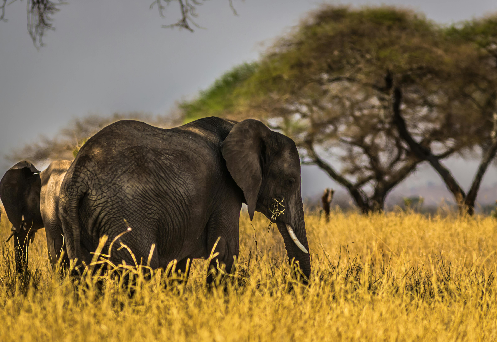
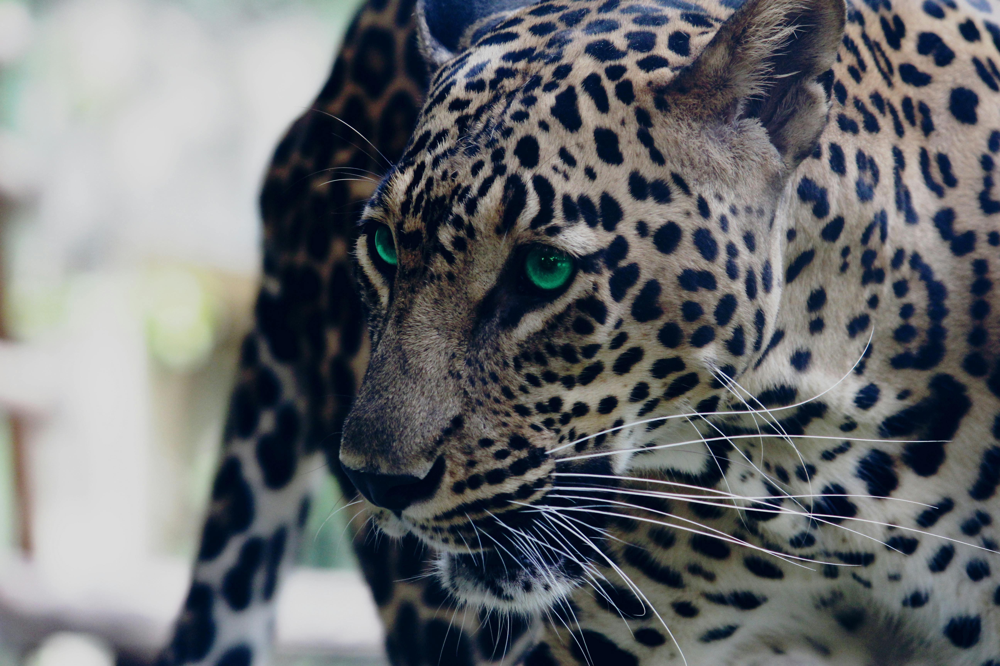

LION - THE KING OF JUNGLE
Uploaded by Praveen , Aug 14 2024.

LION
The lion (Panthera leo) is a large cat of the genus Panthera, native to Africa and India. It has a muscular, broad-chested body; a short, rounded head; round ears; and a dark, hairy tuft at the tip of its tail. It is sexually dimorphic; adult male lions are larger than females and have a prominent mane. It is a social species, forming groups called prides.
Download{kind=link}
CHEETAH - THE SPEEDSTER
Uploaded by Praveen , Aug 15 2024.

CHEETAH
The cheetah (Acinonyx jubatus) is a large cat and the fastest land animal. It has a tawny to creamy white or pale buff fur that is marked with evenly spaced, solid black spots. The head is small and rounded, with a short snout and black tear-like facial streaks. It reaches 67–94 cm (26–37 in) at the shoulder, and the head-and-body length is between 1.1 and 1.5 m (3 ft 7 in and 4 ft 11 in). Adults weigh between 21 and 72 kg (46 and 159 lb). The cheetah is capable of running at 93 to 104 km/h (58 to 65 mph).
Download{kind=link}
ELEPHANT - THE STRONG MIGHTY
Uploaded by Praveen , Aug 15 2024.
ELEPHANT
Elephants are the largest living land animals. Three living species are currently recognised: the African bush elephant (Loxodonta africana), the African forest elephant (L. cyclotis), and the Asian elephant (Elephas maximus). They are the only surviving members of the family Elephantidae and the order Proboscidea; extinct relatives include mammoths and mastodons. Distinctive features of elephants include a long proboscis called a trunk, tusks, large ear flaps, pillar-like legs, and tough but sensitive grey skin.
Download{kind=link}
LEOPARD - THE WHISKER
Uploaded by Praveen , Aug 15 2024.
LEOPARD
The leopard (Panthera pardus) is one of the five extant species in the genus Panthera. It has a pale yellowish to dark golden fur with dark spots grouped in rosettes. Its body is slender and muscular reaching a length of 92–183 cm (36–72 in) with a 66–102 cm (26–40 in) long tail and a shoulder height of 60–70 cm (24–28 in). Males typically weigh 30.9–72 kg (68–159 lb), and females 20.5–43 kg (45–95 lb).
Download{kind=link}
RHINOCEROS - THE NOSE HORN
Uploaded by Praveen , Aug 15 2024.

RHINOCEROS
A rhinoceros (/raɪˈnɒsərəs/; from Ancient Greek ῥινόκερως (rhinókerōs) 'nose-horned'; from ῥίς (rhis) 'nose' and κέρας (kéras) 'horn'. rhinoceros or rhinoceroses), commonly abbreviated to rhino, is a member of any of the five extant species (or numerous extinct species) of odd-toed ungulates in the family Rhinocerotidae; it can also refer to a member of any of the extinct species of the superfamily Rhinocerotoidea. Two of the extant species are native to Africa, and three to South and Southeast Asia.
Download{kind=link}
GREEN FOREST LIZARD - THE CALOTES CALOTES
Uploaded by Praveen , Aug 15 2024.

GREEN FOREST LIZARD
Calotes calotes, the common green forest lizard, is an agamid lizard found in the forests of the Western Ghats and the Shevaroy Hills in India, and Sri Lanka. Calotes calotes is a considerably large species of agamid, measuring 50 to 65 cm (19.5 to 25.5 in) in length, including the tail.
Download{kind=link}
KINGFISHER - THE FISHER KING
Uploaded by Praveen , Aug 15 2024.

KINGFISHER
Kingfishers are a family, the Alcedinidae, of small to medium-sized, brightly coloured birds in the order Coraciiformes. They have a cosmopolitan distribution, with most species living in the tropical regions of Africa, Asia, and Oceania, but also can be found in Europe and the Americas. They can be found in deep forests near calm ponds and small rivers. The family contains 118 species and is divided into three subfamilies and 19 genera.
Download{kind=link}
MONKEY - THE BONKER
Uploaded by Praveen , Aug 15 2024.

MONKEY
Monkey is a common name that may refer to most mammals of the infraorder Simiiformes, also known as the simians. Traditionally, all animals in the group now known as simians are counted as monkeys except the apes. Thus monkeys, in that sense, constitute an incomplete paraphyletic grouping; however, in the broader sense based on cladistics, apes (Hominoidea) are also included, making the terms monkeys and simians synonyms in regard to their scope.
Download{kind=link}
TIGER - THE SAPPHIRE
Uploaded by Praveen , Aug 15 2024.
TIGER
The tiger (Panthera tigris) is a member of the genus Panthera and the largest living cat species native to Asia. It has a powerful, muscular body with a large head and paws, a long tail and orange fur with black, mostly vertical stripes. It is traditionally classified into nine recent subspecies, though some recognise only two subspecies, mainland Asian tigers and the island tigers of the Sunda Islands.
Download{kind=link}
TURTLE - THE CORAL
Uploaded by Praveen , Aug 15 2024.

TURTLE
Sea turtles (superfamily Chelonioidea), sometimes called marine turtles, are reptiles of the order Testudines and of the suborder Cryptodira. The seven existing species of sea turtles are the flatback, green, hawksbill, leatherback, loggerhead, Kemp's ridley, and olive ridley. Six of the seven sea turtle species, all but the flatback, are present in U.S. waters, and are listed as endangered and/or threatened under the Endangered Species Act.
Download{kind=link}
SNAKE - THE CRAWLER
Uploaded by Praveen , Aug 15 2024.

SNAKE
Snakes are elongated, limbless reptiles of the suborder Serpentes. Like all other squamates, snakes are ectothermic, amniote vertebrates covered in overlapping scales. Many species of snakes have skulls with several more joints than their lizard ancestors, enabling them to swallow prey much larger than their heads (cranial kinesis).
Download{kind=link}
SQUIRREL - THE SQIURIDAE
Uploaded by Praveen , Aug 15 2024.

SQUIRREL
Squirrels are members of the family Sciuridae, a family that includes small or medium-sized rodents. The squirrel family includes tree squirrels, ground squirrels (including chipmunks and prairie dogs, among others), and flying squirrels. Squirrels are indigenous to the Americas, Eurasia, and Africa, and were introduced by humans to Australia.
Download{kind=link}
About Me
Myself Praveen a student of Sathyabama University, belonging to the department of Information Technology, 2nd Year.
Popular Post
Cheers
Enjoy the Blog of Wild Animals with the High resolution pictures of them.